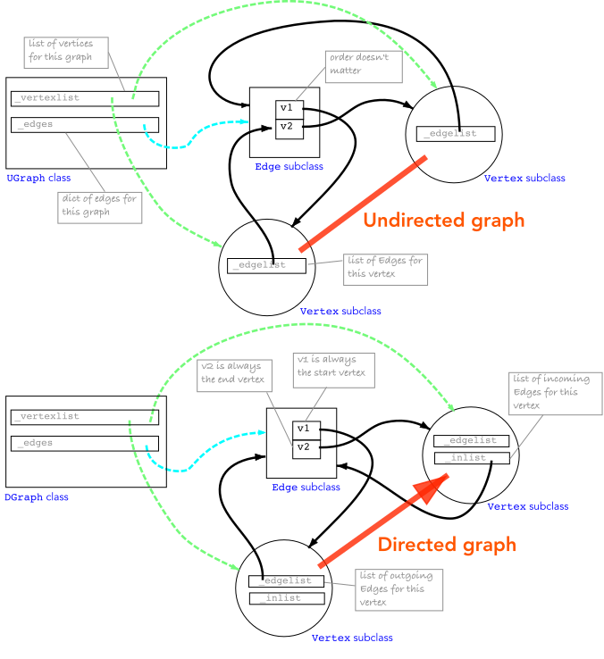
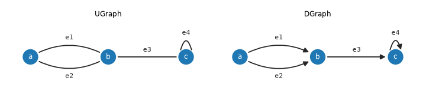

Edges & Vertices
Underlying data structures

The graph class maintains a list of vertices and a dict of edges. For the undirected case, each vertex maintains a list of edges that connect to it, and each edge maintains a reference to the two vertices it connects. In the case of a loop, the edge appears twice in the vertex’s edge list. For the directed case, each vertex maintains two edge lists: a list of outgoing edges and a list of incoming edges.
The graph class provides methods for adding and removing vertices and edges (see Adding and removing vertices and edges) and for querying its structure (see Graph analysis).
What a vertex holds
Each vertex has two private edge lists, plus a back-pointer to its graph.
Attribute |
For undirected graphs |
For directed graphs |
|---|---|---|
|
the edges incident on it |
the edges leaving it |
|
empty |
the edges entering it |
|
the graph it belongs to ( |
the graph it belongs to ( |
Every list entry is a reference to the same Edge class object, and
there is exactly one edge object for each edge in the graph.
Undirected: one list does everything, since an undirected edge is both “out” and “in”. That is also why a loop is stored twice, once for each end, and why it counts 2 towards
degree.Directed: the two lists are the out-list and the in-list. A loop sits once in each, so
degree(in + out) is 2 there too.
An example, as lists
For these simple graphs
(Source code, png, hires.png, pdf)



The vertices a, b and c and edges e1 and e2 are added in that order.
The resulting vertex lists are
Vertex name |
|
|
|
|---|---|---|---|
|
|
|
|
|
|
|
|
|
|
|
|
The graph also keeps every edge once in graph._edges (an insertion-ordered
dict, so [e1, e2, e3, e4]).
The public view of those lists
Method |
Returns for |
Returns for |
|---|---|---|
|
a copy of |
a copy of |
|
a copy of |
a copy of |
|
|
|
|
|
|
|
|
|
|
the far end of each edge in |
the far end of each edge in |
|
|
|
All are returned in the order the edges were connected.
Working with vertices and edges directly
In the earlier examples we did not explicitly create vertices or edges, but we can do so if we want to. The graph classes provide methods to create vertices and edges, and to add them to the graph.
Next, we will explicitly create two vertices
>>> v1 = Vertex(np.random.rand(2))
>>> v2 = Vertex(np.random.rand(2))
and then add them to the graph
>>> g.add_vertex(v1)
Vertex[#0, coord=(0.8473, 0.2444)]
>>> g.add_vertex(v2)
Vertex[#1, coord=(0.004184, 0.68)]
Our graph now has two vertices, but no edges
>>> print(g)
UGraph: 2 vertices, 0 edges, 2 components
We can explicitly create an edge between the two vertices
>>> e = Edge(v1, v2)
and then add it to the graph
>>> g.add_edge(e)
Edge{[#0] -- [#1], cost=0.949}
>>> print(g)
UGraph: 2 vertices, 1 edge, 1 component
Creating the edge and then adding it to the graph, as above, is equivalent to
>>> e = Edge()
>>> e.connect(v1, v2)
Alternatively, we can create a vertex and connect it to an existing vertex, which will implicitly create an edge between the two vertices and add it to the graph.
>>> v3 = Vertex(np.random.rand(2))
>>> g.add_vertex(v3)
Vertex[#2, coord=(0.3187, 0.4585)]
>>> v2.connect(v3)
Edge{[#1] -- [#2], cost=0.3847}
>>> print(g)
UGraph: 3 vertices, 2 edges, 1 component
The connect method of the vertex class creates an edge between the two
vertices and adds it to the graph. The two vertices must have been added to the same graph for the edge to be created.
The connect method is the same for directed and undirected graphs: the graph decides how the edge is
recorded at its vertices.
Note
Wherever a vertex or edge is required, a subclass of the appropriate base class can be used. For example, we can create a subclass of Vertex called MyVertex and a subclass of Edge called MyEdge and then create a new graph using these classes, by passing them as the vertex_class and edge_class arguments of the graph constructor.
The Vertex class
- class Vertex(coord=None, name=None)[source]
Bases:
objectA vertex of a graph, directed or undirected.
A vertex has no direction of its own: how an edge is recorded at its ends is decided by the graph it belongs to (see
UGraphandDGraph). So there is one vertex class, which can be subclassed to give user objects graph capability and passed to the graph asvertex_class.Changed in version 1.0: This replaces
UVertexandDVertex, which are deprecated names for it. They differed only in how an edge was recorded, which is now the graph’s decision.- Each vertex has:
namewhich is its key in the graph, so renaming a vertex that is in a graph updates the graphlabelan int indicating which graph component contains it, read-only: the graph assigns itcoordthe coordinate in an embedded graph (optional)
and its edges are available from
edges(),out_edges()andin_edges().- __init__(coord=None, name=None)[source]
Create a vertex object
- Parameters:
coord (array-like, optional) – coordinate of the vertex for an embedded graph, defaults to None
name (str, optional) – vertex name, defaults to None
Creates a vertex but does not add it to a graph – use
Graph.add_vertex()for that.- Seealso:
The Edge class
- class Edge(v1=None, v2=None, cost=None, data=None)[source]
Bases:
objectEdge class
Is used to represent directed and undirected edges.
Each edge has a cost, arbitrary data, and two vertices
v1andv2, which are read-only: the start and end vertex for a directed edge.- data: Any
reference to arbitrary data associated with the edge
Note
An undirected graph is created by having a single edge object in the edgelist of _each_ vertex.
This class can be inherited to provide user objects with graph capability.
Inheritance is an alternative to providing arbitrary user data.
Pass the subclass as
edge_classwhen constructing the graph and the graph will create instances of it itself, seeGraph.
An Edge points to a pair of vertices. At
connecttime the vertices get references back to the Edge object.graph.add_edge(v1, v2)callsv1.connect(v2)- Seealso:
- __init__(v1=None, v2=None, cost=None, data=None)[source]
Create an edge object
- Parameters:
Creates an edge but does not connect it to the vertices or add it to the graph.
If vertices are given, and have associated coordinates, the edge cost will be computed according to the distance measure associated with the graph.
datais a way of associating any object with the edge, its value can be found as the.dataattribute of the edge. An alternative approach is to subclass theEdgeclass.Note
To compute edge cost from the vertices, both vertices must have already been added to the same graph – otherwise
costis left as None rather than raising, since this constructor is also used standalone, independent of any graph.- Seealso:
- connect(v1, v2)[source]
Attach this edge to a pair of vertices
- Parameters:
v1 (Vertex subclass) – start of the edge
v2 (Vertex subclass) – end of the edge
- Raises:
ValueError – either vertex has not been added to a graph, or the vertices belong to different graphs
TypeError – this edge is not an instance of the graph’s
Graph.edge_class
- Return type:
The edge connects vertices
v1andv2, and is added to the graph that those vertices belong to.Warning
Intended for an edge that is not yet part of a graph. The edge’s
v1andv2are overwritten without checking, so connecting an edge that is already in a graph leaves it referenced from its old vertices as well.Note
The vertices must already be added to the graph.
- Seealso:
- property endpoints: list[Vertex]
The two vertices of this edge
- Returns:
start and end vertex
- Return type:
list of Vertex subclass
- Seealso:
- next(vertex)[source]
Return other end of an edge
- Parameters:
vertex (Vertex subclass) – one vertex on the edge
- Raises:
ValueError –
vertexis not on the edge- Returns:
the other vertex on the edge
- Return type:
Vertex subclass
e.next(v1)is the vertex at the other end of edgee, ie. the vertex that is notv1.
- remove()[source]
Remove this edge from its graph
- Raises:
ValueError – the edge is not connected to a graph
e.remove()removesefrom its graph’s own edge collection and from its connected vertices’ edge lists (both, for an undirected edge; the source only, for a directed one – seeGraph.remove_edge()), and clearse.v1/e.v2toNone. TheEdgeobject itself is not deleted – it becomes an orphaned, disconnected shell, and callingremove()on it again raisesValueError.Note
This is a thin convenience wrapper around
Graph.remove_edge().- Return type:
None
>>> from pgraph import UGraph >>> g = UGraph() >>> v1 = g.add_vertex(coord=[0,0], name='v1') >>> v2 = g.add_vertex(coord=[1,1], name='v2') >>> e = g.add_edge(v1, v2) >>> e.remove() >>> print(g) UGraph: 2 vertices, 0 edges, 2 components
- Seealso:
- property v1: Vertex | None
First vertex of the edge, the start vertex for a directed edge
- Returns:
the vertex, or None if the edge is not connected
- Return type:
Vertex subclass or None
Changed in version 1.0: Read-only. It was a plain attribute, so assigning to it on an edge that was in a graph left the graph inconsistent: the vertices’ edge lists no longer agreed with the edge, and the edge could not be removed. Give the vertices to the constructor,
Edge(v1, v2), or toconnect()orVertex.connect().